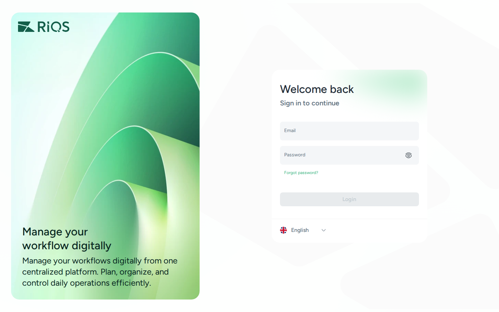
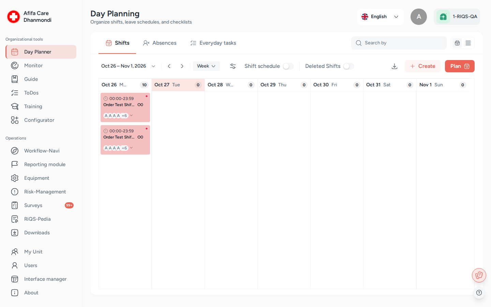

Getting started¶
In one sentence: Activate your account from the invitation email, log in, check that you are in the right unit, and use the left menu to reach your modules.
1. Activate your account¶
Who: every new user.
- An admin or Power User creates you in RIQS. You receive an invitation email.
- Open the link in the email.
- Set your password.
- You are now active and can log in.
If the link has expired or you didn't get the email, ask your Power User or Administrator to send the invitation again.
2. Log in¶

- Open the RIQS web address you were given.
- Enter your Email and Password.
- Click Login.
Forgot your password? Click Forgot password on the login page and follow the email you receive.
3. Find your way around¶

The RIQS screen (here: the Day Planner, as a Power User sees it). Screens show test data.
| Part of the screen | What it is for |
|---|---|
| Left menu | Opens modules. You only see modules that your subscription and role allow |
| Unit name (top left, under the logo) | The unit you are working in. Administrators change units here. Other users with several units choose one when they log in |
| Language (top right) | Switch the language of the app |
| Profile picture (top right) | Your own details and password |
| Organisation (top right) | The organisation the unit belongs to |
| Round buttons (bottom right) | RiQS-It notes (see RiQS IT) and the ? help panel (see Tutorials & help) |
Left menu at a glance¶
The left menu has two groups. What you see depends on your role and your organisation's subscription.
| Group | Menu entry | What it is | Read more |
|---|---|---|---|
| Organizational tools | Day Planner | Shifts, absences and everyday tasks | Shift Plan |
| Monitor | Scheduled control tasks | Monitoring | |
| Guide | Step-by-step guides | Process Guide | |
| ToDos | Single tasks to assign and follow up | Open Items | |
| Training | Trainings and results | Training | |
| Configurator | Build guides, trainings, control tasks, report templates, interactive documents and surveys | Configurator | |
| Operations | Workflow-Navi | Your personal list of open work | Cockpit |
| Reporting module | CIRS, complaints, faults, feedback, ideas, hints | Incident Reports | |
| Equipment | Devices, maintenance and validation | Equipment | |
| Risk-Management | Risks, assessments and measures | Risk Management | |
| Surveys | Surveys and certification packages | Surveys | |
| RiQS-Pedia | The document library | RiQS-Pedia | |
| Downloads | Reports you requested, ready to download | Reports & downloads | |
| Administration | My Organization | The organisation's details | Organisation & units |
| My Unit | The units and their settings | Organisation & units | |
| Users | People and their roles | Users | |
| Interface manager | Bulk imports | Interface Manager | |
| About, Handbook | Version information, manuals and videos | Tutorials & help |
Professionals see a shorter menu, and only Administrators see My Organization. The labels follow the language you choose.
4. Your first week: suggested path¶
| If you are… | Read this first |
|---|---|
| A staff member | Cockpit → Shift Plan → RiQS-Pedia → Incident Reports |
| A unit lead | All of the above, plus Users, Process Guide, Monitoring |
| An admin | How RIQS is organised → Organisation & units → Users → Subscription & billing |
| A new team member (dev, QA, BA, support) | This whole overview folder, then the All modules page, then the modules you will work on |
Last reviewed: 2026-10-26